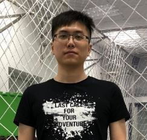
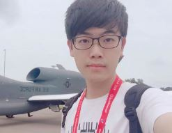
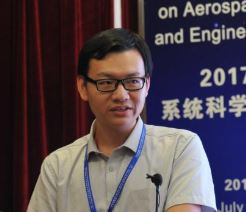
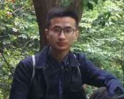

Ph.D. Students¶
{kind=link}
Ye Zheng obtained his Master’s degree from Harbin Institute of Technology (Shenzhen) in 2019 and Bachelor’s degree from Guilin University of Technology in 2016. During his undergraduate period, he won many awards such as the second prize in National English Competition for College Students, the National Scholarship, and the second prize in Guangxi Contest District in China Undergraduate Mathematical Contest in Modeling. At present, he is a Ph.D. student and his research area is machine vision.
{kind=link}
Jianan Li received his M.Sc. degree in aerospace engineering from the Nanyang Technological University, Singapore in 2018; the B.Sc. degree in electromechanical engineering from the University of Macau, Macao, China, in 2015. He joined the Air Traffic Management Research Institute (ATMRI) in Singapore as a Research Associate from 2018 to 2019 and currently, he is a Ph.D. student at Westlake University, Hangzhou, China. His research topics include vision-based control and learning-based control with application to unmanned aerial systems. The ResearchGate link is available here.
{kind=link}
Zian Ning received his B.Sc. degree from Northwestern Polytechnical University, Xi’an, China, in 2015; the M.Sc. degree in aeronautical engineering from Shanghai Jiao Tong University, Shanghai, China, in 2018. During the master’s degree, he did some research on multi-UAV cooperation and published a research article. During the period from March to December 2017, he worked as an intern at Shanghai Aircraft Design and Research Institute, COMAC, China, where his mainly work was on flight control systems of civil airplanes. At present, he is a Ph.D. student at Westlake University, Hangzhou, China. His research interests include high mobility swarm of aerial robots and collision avoidance.
{kind=link}
Kang Li obtained the B.E. degree from Zhengzhou University, where he was ranked 1st in his major during during his four-year study. He obtained the “Excellent Summer Camp Member” award at Westlake University in 2018 and eventually became a PhD student at Westlake University. During his four-year undergraduate study, he participated the mathematical modeling and electronic design competition for many times and won national awards. His undergraduate graduation design was directed by Dr. Shiyu Zhao at Westlake University and was awarded the outstanding thesis of Zhengzhou University with the highest score of the whole school. At present, his research interest is mainly multi-robot distributed collaborative control.